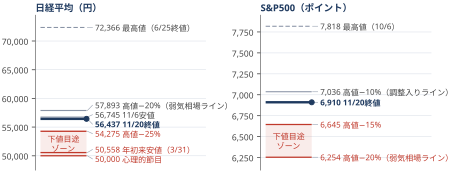

急落相場の「底」と「守り方」
日経225・S&P500はどこまで下がるのか
― 下げ相場は「指をくわえて見ている」しかないのか？ インバースETF・空売り・VIXで読み解く ―
要旨（3分で読むまとめ）
- 今回の急落はAI・半導体株の巻き戻しが震源。S&P500は高値から1割超下げて「調整局面」入り、日経平均は高値から22%下げてすでに「弱気相場」の水準にある。
- 下値の目安は日経平均 54,000円前後（メイン）〜50,500円（リスク）、S&P500 6,650前後（メイン）〜6,250（リスク）。
- エヌビディアには従来の「循環取引」疑惑に加え、米SEC（証券取引委員会）が会計処理を調べているとの報道が出た。SOXはもう一段下がりうる。
- 下げ相場にも打つ手はある。1357・1360（日経ダブルインバース）、2249（S&P500ダブルインバース）、SOXS（半導体ベア3倍）は下落で値上がりするため、ヘッジ（保険）になる。
- 空売りは損失が青天井。信用取引は新人は手を出さない。
- 底を探る節目は感謝祭（11/26）→ブラックフライデー（11/27）→FOMC（12/9）→クリスマス。反転を狙うならVIXが50を超えて、ピークを打った局面。
1昨日、何が起きたのか
11月20日、東京市場では日経平均が3,007円安の56,436円（−5.06%）と、下げ幅で歴代5位の急落となった。前日の米国株安が波及し、アドバンテストやソフトバンクグループなどAI・半導体関連が集中的に売られた。プライム市場の93%の銘柄が下落する全面安である[1][2]。
同じ日の夜のNYでも売りは止まらなかった。S&P500は−3.70%、ナスダックは−5.28%、半導体株指数（SOX）は−10.7%と、2008年の金融危機を思わせる下げになった。エヌビディアは決算が市場予想を上回り、見通しも引き上げたにもかかわらず、米SECが同社の会計を調べているとの報道を受けて約14%下げた[3][4]。S&P500は週間で−8.6%、7日続落である。
背景には、①AI投資の「回収可能性」への疑念、②アンソロピックのナスダック上場に伴う換金売り（AI株を売って新規上場株を買う資金の移動）、③12月FOMCで利上げが有力視される金利高、という3つの重しがある[1][7]。

2日経225・S&P500はどこまで下がるのか
下値を考えるときは、「高値から何%下げたか」と「過去に止まった価格（節目）」の2つを重ねて見る。一般に高値から−10%で「調整」、−20%で「弱気相場（ベアマーケット）」と呼ぶ。

| 指数 | メインシナリオ（年内の下値） | リスクシナリオ（悪材料が続く場合） | 根拠 |
|---|---|---|---|
| 日経平均 | 54,000円前後（高値から−25%） | 50,500円前後（年初来安値・高値から−30%） | 11/6安値56,745円を割り込み、次の支えが薄い。50,558円（3/31安値）と高値から−30%（50,656円）が重なる |
| S&P500 | 6,650前後（高値から−15%） | 6,250前後（高値から−20%＝弱気相場入り） | 景気後退を伴わない調整は−10〜15%で止まることが多い。AI投資の縮小が実体経済まで波及すれば−20%台に入る |
日経平均は米国より下げがきつい。指数に占める値がさの半導体株（アドバンテスト、東京エレクトロンなど）とソフトバンクグループの比重が大きいためで、SOXが下げると日経平均はその分大きく下げやすい。日経平均の底はSOXの底と同時に来る、と覚えておきたい。
3トピック：エヌビディアの「循環取引」と会計問題 ― SOXはもう一段下がるか

① 以前から指摘されていた「循環取引」
エヌビディアはOpenAIなどのAI開発企業や、GPUを貸し出すネオクラウド企業に出資や買い取り保証をしている。その相手先がエヌビディアのGPUを大量に買う。お金が一周して自社の売上に戻るこの構図は、本当の需要より売上を大きく見せているのではないか、と以前から疑われてきた[6]。
② 新たに会計処理が調べられている
ロイターによると、米SECの調査は会計処理に焦点を当てている。市場では、売上の大部分を占めていたシンガポール向け売上の地域別開示の方法を変えた件や、一部の取引先への売上の扱いが問題視されているとの見方が出ている[4][5]。ただし、調査が始まったことは不正の証明ではない。何も処分されずに終わる調査も多い点は区別しておくこと。
決算が良くても株価が下がるのは、市場の関心が「売上の大きさ」から「売上の中身」へ移ったためだ。調査の結果が出るまでには時間がかかり、その間は思惑で何度も売られやすい。売上が連動するTSMC、メモリ、製造装置（アドバンテスト、東京エレクトロンなど）、ネオクラウド各社にも疑いが広がる可能性があり、SOXは11/20安値を下回るもう一段安を想定しておく。
4下げ相場は「指をくわえて見ている」しかないのか？ ― インバースETFという選択肢
前回の会議で井筒さんから「下がる時は何もできないのでは？」という質問があった。答えはNO。株式市場には指数が下がると値上がりするETF（ベア型＝インバース型）があり、普通の株と同じように現物（自分のお金の範囲）で買える。保有株の値下がりを埋め合わせる「保険（ヘッジ）」として使えるのが最大の利点だ。
| コード | 名称（運用会社） | 連動対象 | 倍率 | 取引のポイント |
|---|---|---|---|---|
| 1357 | NEXT FUNDS 日経平均ダブルインバース（野村AM） | 日経平均 | −2倍 | 円建て・東証。出来高が多く、日経平均を下落ヘッジする定番 |
| 1360 | 日経平均ベア2倍上場投信（楽天投信投資顧問） | 日経平均 | −2倍 | 円建て・東証。1357と同じ性格で、価格帯が異なる |
| 2249 | iFreeETF S&P500ダブルインバース（大和AM） | S&P500先物 | −2倍 | 日本株と同じ口座・円で米国株の下落をヘッジできる。信託報酬は年0.803% |
| SOXS | Direxion Daily Semiconductor Bear 3X | 米国の半導体株指数（SOXとほぼ同じ動き） | −3倍 | ドル建て・米国市場。SOXが1日10%下がれば約30%上がる。値動きは非常に激しい |
11/20の値動きにあてはめると、日経平均が−5.06%なので1357・1360は約+10%、SOXが−10.7%なのでSOXSは約+30%になる計算だ（実際の値はETFの基準価額と市場価格の差で多少ずれる）。
なぜ「下がっているのに」利益が出るのか ― ETFの仕組み

運用会社は投資家から集めたお金を担保にして、株価指数の先物を純資産の2倍（3倍）分「売り」（先物の売り建てやスワップ契約という取引を使う）。指数が下がれば先物を安く買い戻せるので、その差額がETFの資産に加わり、基準価額が上がる。つまり運用会社が代わりに「空売り」をしてくれているのと同じである。投資家にとっての違いは、損失が自分で払ったお金（投資額）までに限られること。ここが個人の空売りとの決定的な差になる。

- 長く持たない：毎日「前日比の−2倍」になるよう調整されるため、上下を往復する相場では目減りする（図5）。保有は数日〜数週間の短期に限る。
- 上がれば2倍・3倍で損：相場が反発すると、上昇率の2倍（3倍）の速さで値下がりする。損切りラインを先に決めておく。
- ヘッジの量：保有株の評価額の1/4〜1/2程度を目安にする（−2倍なので、半分の金額で全体をほぼ相殺できる）。全額を注ぎ込むのは「逆張りの博打」になる。
5下落で儲けているのは誰か ― 空売りの仕組みと危険性
相場が急落した日、大きく儲けているのは高値で「空売り」をして、安値で「買い戻す」人たちだ。空売りとは、持っていない株を証券会社から借りて先に売り、後で買い戻して返す取引のことで、信用取引の口座が必要になる。

買いと空売りのリスクの違い
現物の買い：1,000円で買った株が0円になっても、損失は1,000円まで（−100%が上限）。
空売り：1,000円で売った株が3,000円になれば損失は2,000円、10,000円になれば9,000円。株価に上限がないので、損失も青天井である。さらに、急落の後には売り方が慌てて買い戻すことで株価が急騰する「踏み上げ（ショートスクイーズ）」が起きやすく、まさに今のような局面が一番危ない。
- 信用取引は担保の約3.3倍まで取引できる。損失も3.3倍の速さで膨らむ。
- 損失で担保が足りなくなると追証（追加の保証金）を求められ、期限までに払えなければ強制的に決済される。入金した額を超える借金が残ることもある。
- 貸株料・金利・逆日歩（株の借り賃の上乗せ）などのコストが毎日かかる。
- 下落に備えたいなら、現物で買えるインバースETFを少額で。損失は投資額までに限られる。まずはここから経験を積む。
6底はいつか ― 節目のカレンダーとVIXという「温度計」

ズバリ、今回の下げは米国の感謝祭（11/26）・ブラックフライデー（11/27）、FOMC（12/9）、クリスマス（12/25）といった節目まで続く可能性があると見ている。ブラックフライデーは年末商戦の売れ行きで米国の消費の強さを確かめる場。FOMCは利上げか据え置き（利下げ）かの分かれ目で、市場は25bp（0.25%）の利上げをほぼ織り込んでいる。0.5%の大幅利上げを主張する理事もいる[7][8]。仮に「利上げ見送り」や「今回の利上げで打ち止め」といったメッセージが出れば、反転のきっかけになりうる。逆に大幅利上げなら下げは年末まで長引く。
VIX（恐怖指数）とは
VIXは、S&P500のオプション価格から計算される「今後30日間に市場がどれだけ揺れると予想されているか」の指標で、恐怖指数とも呼ばれる。平常時は10〜20。株価が急落して投資家が保険（プットオプション）を買いに走るほど上がる。目安としてVIX÷16が「1日に動くと予想される幅（%）」で、今の36なら1日±2.2%、50なら±3.1%の揺れを市場が見込んでいる。
VIXが50を超えるのは、多くの投資家が投げ売り（セリングクライマックス）している時だ。2020年3月はVIXのピーク（3/16）から1週間後に株価が底を打ち、2025年4月はVIXのピーク（4/8）と株価の底が同じ日だった[9]。

- VIXが50を超えたら準備する。ただし、超えた瞬間に飛びつかない。2008年はVIXのピーク（11月）から株価の底（翌年3月）まで4か月かかった。
- VIXが前日の高値から下がり始めた日（長い上ヒゲが出た日など）を起点に、3〜4回に分けて買い下がる。
- 買いを始めると同時に、持っているインバースETFは利益確定する（上昇局面では2倍・3倍で損をするため）。
7まとめ ― 新人のための「急落相場の行動指針」
| 局面 | サイン | やること |
|---|---|---|
| いま（下げの途中） | VIX 30〜40、SOXが安値を更新 | 慌てて買わない。保有株が多い人は、1357／1360／2249を保有額の1/4〜1/2だけ買ってヘッジする。SOXSは値動きが激しいので少額に限る |
| 節目（11/27・12/9） | ブラックフライデーの売上、FOMCの結果と声明の内容 | イベントの前にヘッジの量を見直す。結果を確認してから動く |
| 投げ売り | VIXが50を超える、日経平均54,000〜50,500円、S&P500 6,650〜6,250 | 買う銘柄の候補リストを用意しておく。インバースETFの利益確定を始める |
| 反転 | VIXのピークアウト、SOXが前の安値を割らずに反発 | 3〜4回に分けて買い出動する。信用取引・空売りは使わない |
下げ相場は「何もできない時間」ではない。守る手段（インバースETF）を知り、反転の合図（VIX）を待ち、次の上昇相場に備えて資金を残しておく時間である。一番やってはいけないのは、焦って信用取引で取り返そうとすること。相場から退場しなければ、チャンスは必ずまた来る。
- OANDA証券「日経平均が1日で3,008円安、AI・半導体株に何が起きている？」（2026/11/20）／日テレNEWS「日経平均株価 終値約7か月ぶり5万6000円台」
- 株探ニュース「日経平均 大引け｜3日ぶり急反落、ハイテク株中心に全面安」（11/20）／東京報道新聞「歴代5位の急落、3007円安の5万6436円」
- Motley Fool "Stock Market Today, Nov. 20: Stocks Plunge as AI Trade Unwinds"／investingLive "Nasdaq plunges 5.28%"／StockTitan "US Stocks Close Sharply Lower"
- Reuters（Investing.com掲載）"Exclusive: Nvidia's accounting is a focus of US SEC investigation, sources say"（11/20）
- Seoul Economic Daily "SEC probes Nvidia accounting"／BigGo Finance（地域別売上開示の変更に関する報道）
- The Register "AI's trillion dollar deal wheel bubbling around Nvidia, OpenAI"（2025/11/4）
- CNBC "Fed's Waller says central bank may need to 'shock people' with half-point rate hike"（11/18）／rateprobability.com（OIS織り込み、11/20）
- 外為どっとコム「来週の日経平均見通し（11/23〜11/27）」（11/20）／やまのらぼ（note）日経平均の節目に関する考察（11/20）
- Cboe VIX終値（Ad-hoc News、Cappnotes 11/20）。過去のピークはCboeの公表値（2008/11/20 終値80.86、2020/3/16 終値82.69、2024/8/5 場中65.73、2025/4/8 終値52.33）
- 大和アセットマネジメント iFreeETF S&P500ダブルインバース（2249）商品ページ／JPX レバレッジ型・インバース型ETF資料